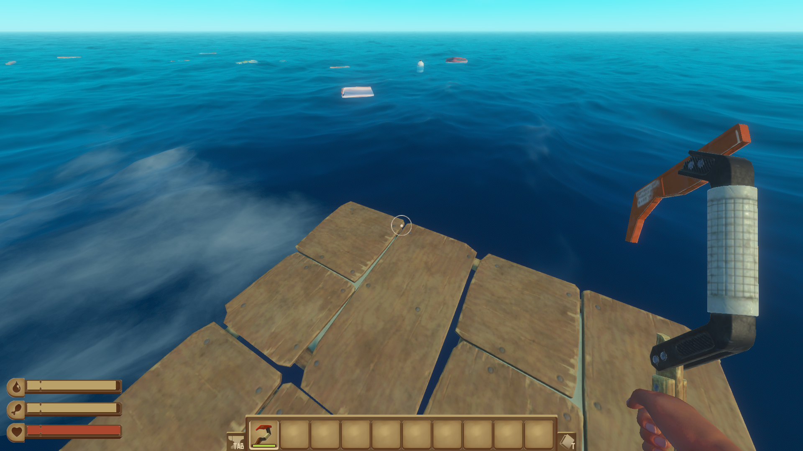
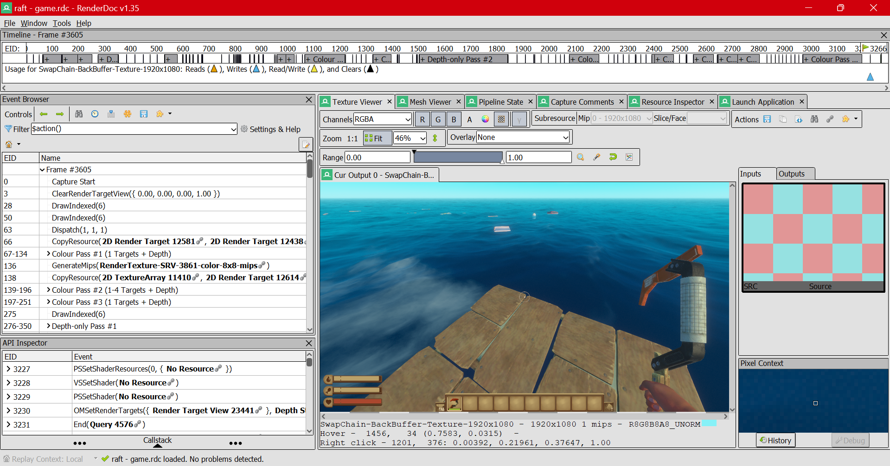
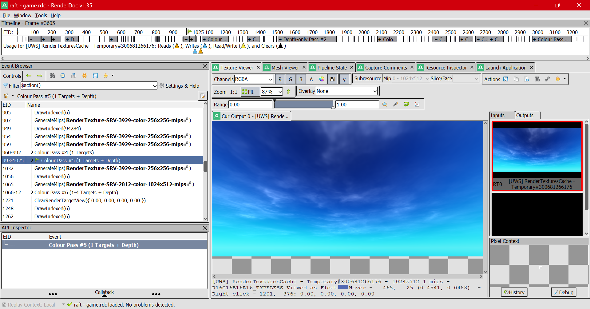
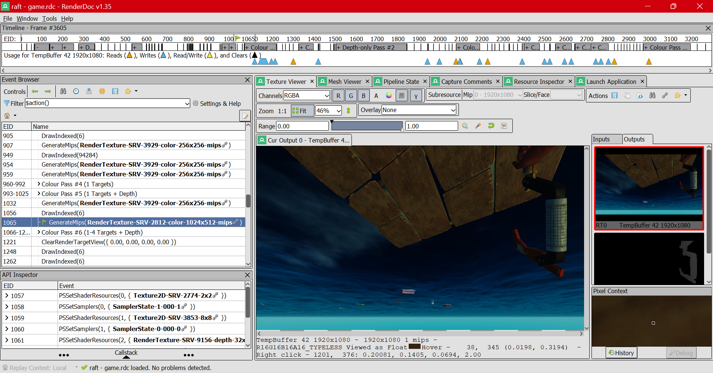
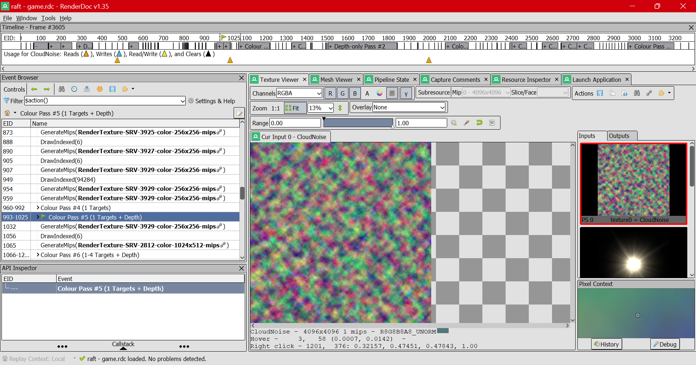
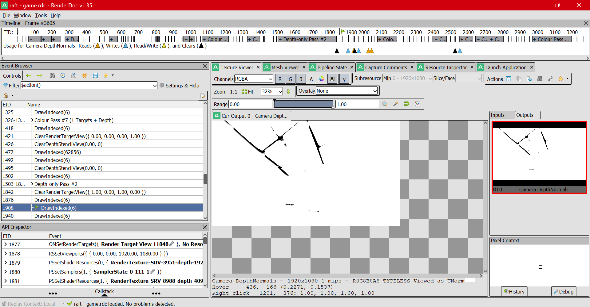
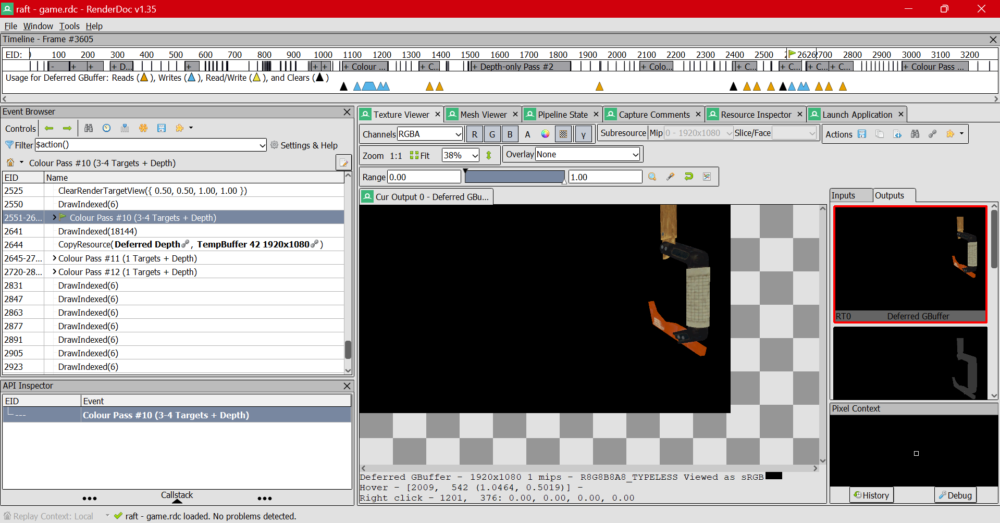

Не все именно в таком порядке, некоторые этапы вычисления вида объектов перемешаны.
Создается море, с волнами. Волны просчитываются с помощью FFT по всей видимости: в пояснении к кадру есть WavesRendererFFT (видимо, какой-то встроенный механизм directx11...) и WavesDisplacementMap -- карта расположения волн в переводе на русский.
След на воде от движения плота.
Промужеточный этап выглядит так.

Через несколько шагов, когда будет инструмент и плот, все будет выглядеть так. Странно, почему этот вид (сцена) стоит сразу после следа плота в списке событий..
Видимо, мы в renderdoc самое последнее состояние этой картинки. Т.к. не создавалась промежуточная, а перезаписывалась уже существующая.

Текстура плавающих объектов. Они считаются внутри прохода обработки colour pass #6 (pass). Можно пройтись по командам внутри пасса и увидеть, как объекты появляются один за одним!


CloudNoise -- все понятно: шум, из которого будут созданы облака. :)
Хотел собрать еще скриншотов, но второй раз не смог найти в event browser.. Хотя такой этап, по всей видимости, есть.
Видел в dota 2 такой эффект, как карта нормалей. Его можно включить и выключить. Но теперь мы это видим и в renderdoc. Пока не знаю, что это такое.

Где-то до этого считалось его положение. Выглядело это как черное на черном, вычислялся именно сам объект. А теперь происходит "разукрашивание" в виде наложения такой текстуры. На втором вводе видна карта, какие участки текстуры будут выбраны.
Текстура крюка.

Готовый крюк.

Весь кадр.

Шейдеры не удалось найти в захвате. Возможно, дело в том, что игра использовала directx11, а не vulkan..
Не особо понятно, в каком порядке идут события. Возможно, дело в том, что они происходят параллельно. А мы их пытаемся записать в одну последовательность. Так мы можем увидеть лишь отношения зависимостей: то, что требуется для операции, должно быть получено ранее.
Если вдруг недостаточно глубокий анализ, скажите мне, постараюсь обратить внимание на то, что вам интересно.